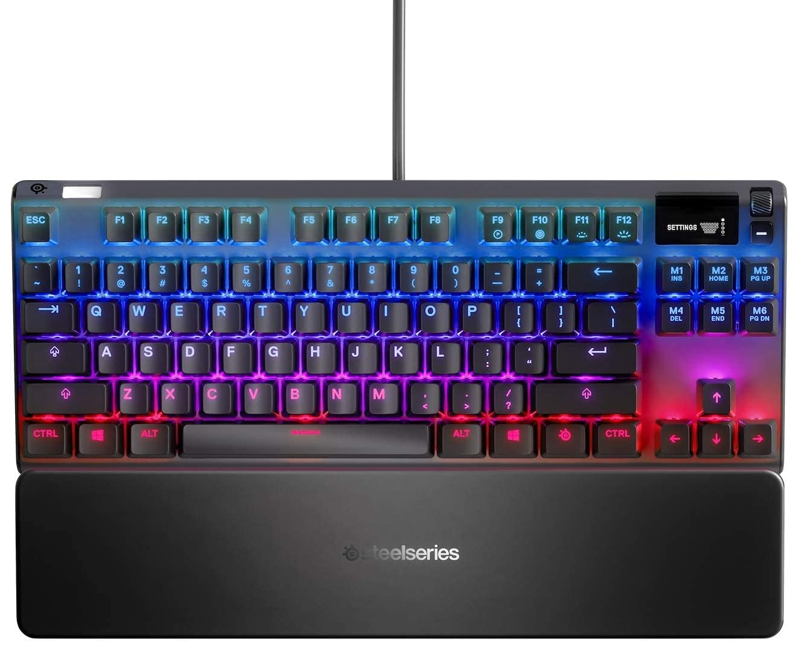
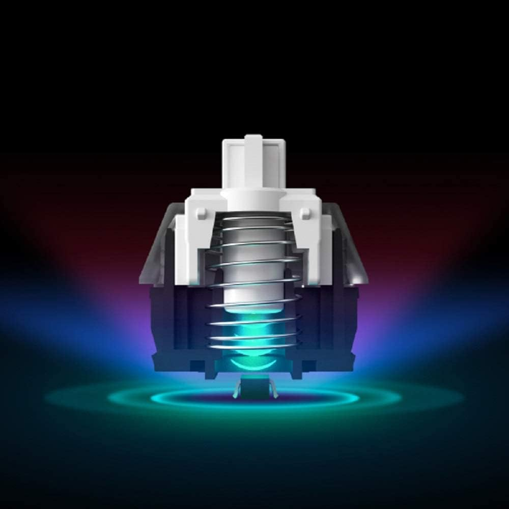
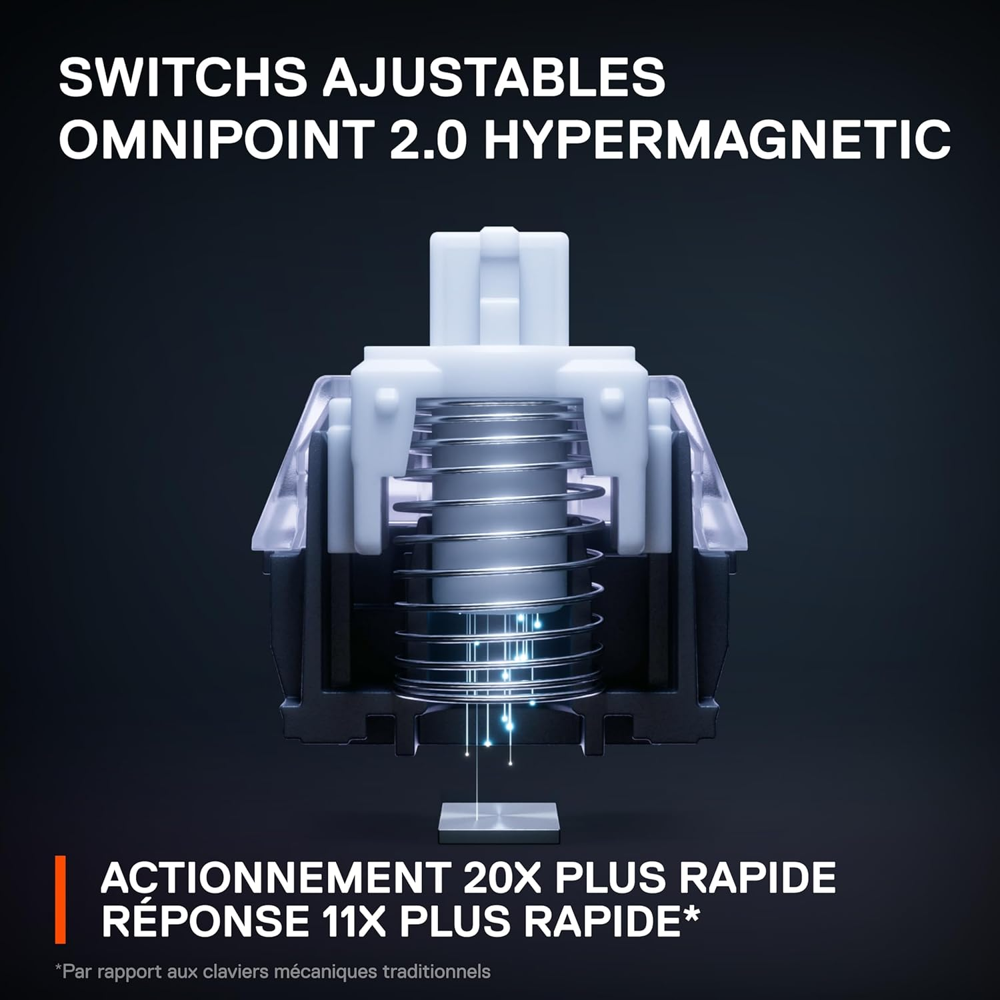
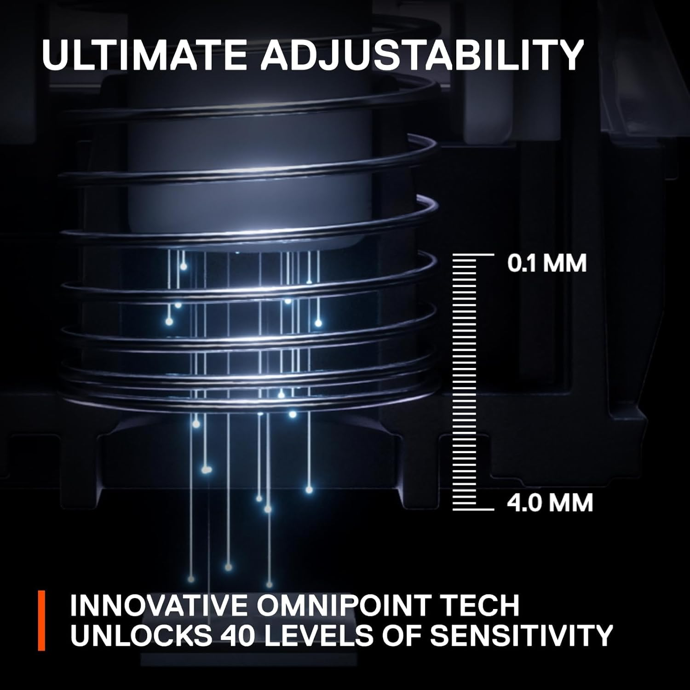
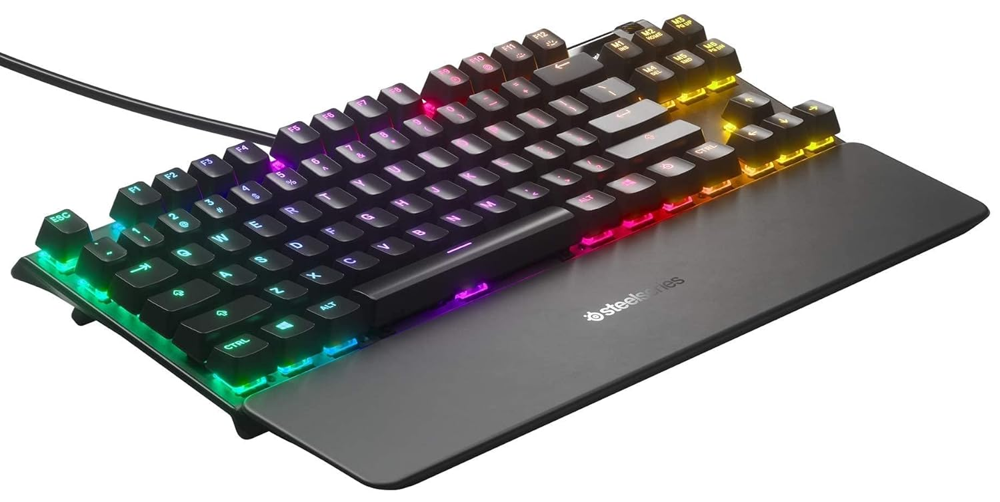

APEX PRO TKL 2023
1699,90 O Apex Pro TKL 2023 é um teclado mecânico compacto de alto desempenho, focado em gamers. Ele possui switches ajustáveis OmniPoint 2.0, permitindo personalização completa da resposta de cada tecla, e um formato TKL (tenkeyless), que economiza espaço sem comprometer a funcionalidade. Com iluminação RGB, estrutura em alumínio durável e recursos como tela OLED personalizável, é ideal para jogadores que buscam precisão, velocidade e estilo.

Switch OmniPoint 2.0
O OmniPoint 2.0 é a segunda geração dos switches ajustáveis da SteelSeries, oferecendo uma resposta ultrarrápida e personalizável. Ele permite que os usuários ajustem a altura de atuação de cada tecla, variando de 0,2 mm a 3,8 mm, para maximizar a precisão e a velocidade em diferentes tipos de uso, como jogos e digitação. Com até 11 vezes mais rapidez e 10 vezes mais durabilidade do que switches mecânicos tradicionais, o OmniPoint 2.0 oferece uma experiência altamente responsiva e adaptável.

Magnetico
Tecnologia magnética é amplamente utilizada em sensores e switches para detecção precisa de movimentos ou posições, sem a necessidade de contato físico. Ela funciona por meio de campos magnéticos, como no caso de sensores Hall Effect, que medem variações na intensidade do campo para acionar comandos. Esse método oferece alta durabilidade, já que reduz o desgaste mecânico, além de permitir respostas mais rápidas e personalizáveis, como visto em teclados com switches ajustáveis, por exemplo.

Ajustes de pressão
O ajuste de pressão, especialmente em teclados mecânicos com switches ajustáveis, permite ao usuário personalizar a força necessária para acionar cada tecla. Isso significa que é possível configurar a resistência da tecla de acordo com as preferências individuais, otimizando a experiência de digitação ou jogo. O ajuste pode variar desde uma pressão leve, ideal para jogos que exigem rápidas ações, até uma pressão mais pesada, adequada para digitação precisa. Essa personalização melhora a ergonomia e a eficiência, permitindo que cada usuário encontre o equilíbrio perfeito entre conforto e desempenho.

Conforto
Conforto e ergonomia são fundamentais para otimizar a experiência de uso de dispositivos, especialmente em ambientes de trabalho ou jogos prolongados. A ergonomia se refere ao design que considera a interação entre o usuário e o equipamento, visando reduzir a tensão e o esforço físico. Um teclado bem projetado, por exemplo, pode incluir características como descanso de pulso, altura ajustável e teclas com ação suave, que promovem uma postura natural das mãos e dos braços. Isso não apenas aumenta o conforto durante o uso, mas também previne lesões, melhorando a produtividade e a satisfação do usuário.